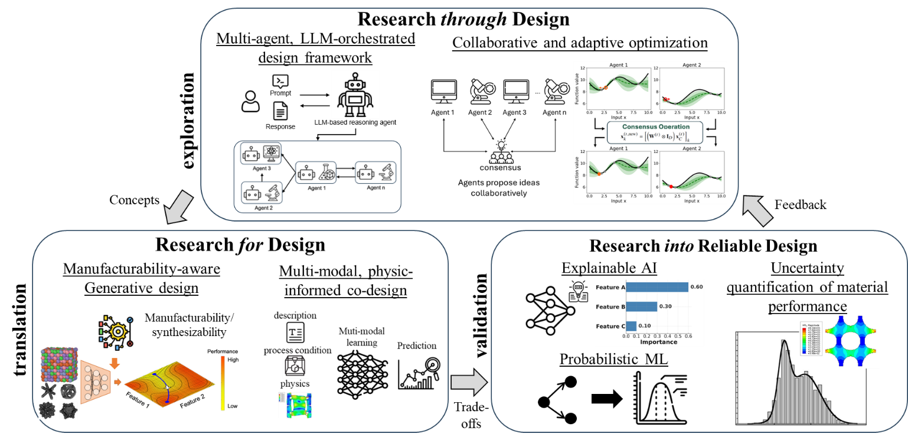

Research
Three connected research directions
AIM² Lab develops AI-enabled, experimentally grounded methods that connect autonomous discovery, generative design, and uncertainty-aware decision-making for materials and mechanical systems.

01
Autonomous design and discovery
Adaptive AI agents coordinate simulation, experiments, and scientific knowledge in closed-loop discovery workflows.
Explore this direction 02Generative co-design
Physics-aware generative methods jointly design materials, structures, and feasible pathways from concept to realization.
Explore this direction 03Uncertainty-aware reliable design
Probabilistic learning and robust optimization quantify uncertainty and guide trustworthy engineering decisions.
Explore this direction